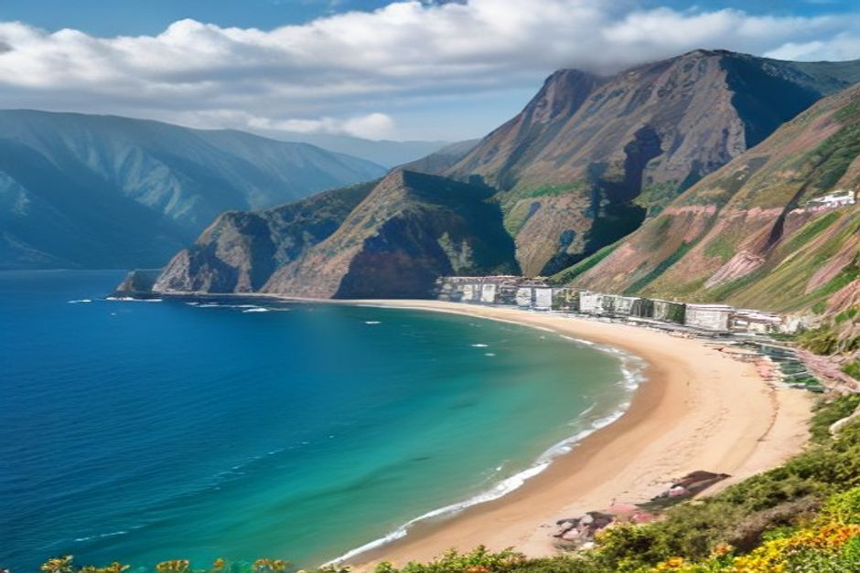
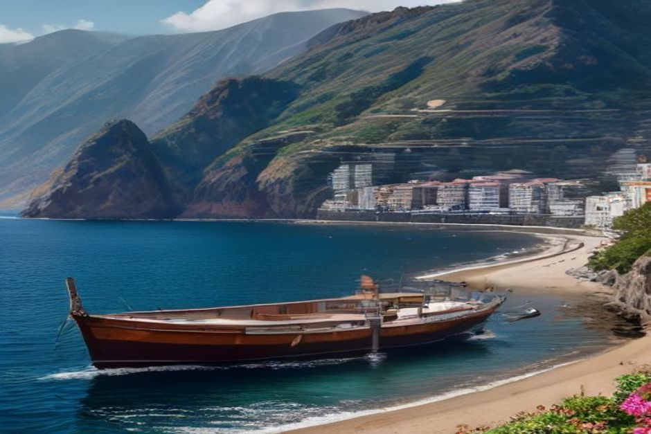

Ponta do Sol, a volte scritto "Ponta de Sol" o "Ponta del Sol", è il villaggio della costa sud di Madeira che molti attraversano senza fermarsi. Eppure ha una spiaggia dove si fa il bagno, un molo dell'Ottocento e il cielo più sereno dell'isola. Ecco cosa vedere, quanto tempo serve e come arrivarci.
Ponta do Sol in breve: vale la sosta?
Sì, se vi piacciono i posti piccoli e senza fretta. Non è un luogo da lista di attrazioni: c'è un molo, una chiesa antica, una spiaggia e una passeggiata con le palme. Basta una mezza giornata, o anche meno se ci passate di mattina.
Se cercate "porta do sol madeira" sappiate che il nome giusto è Ponta do Sol, cioè "punta del sole". Il nome è letterale: la valle guarda quasi esattamente a sud e le nuvole che si accumulano sulle montagne centrali e sulla costa nord la raggiungono meno spesso che altrove.
Dove si trova e come arrivare da Funchal
Il villaggio sta sulla costa sudoccidentale, a circa 25 chilometri da Funchal. In auto sono circa 35 minuti lungo la superstrada VE4, dieci minuti dopo Ribeira Brava. La vecchia strada costiera scende tra le terrazze di banane, passa in una galleria breve e arriva a una passeggiata con le palme affacciata sul mare.
Ci sono due modi per arrivarci da Funchal:
- In auto, con la VE4: comodo se avete già un'auto a noleggio e volete fermarvi a piedi sul lungomare.
- In barca: la gita in giornata di 3 ore di Chifbay arriva fino a Ponta do Sol, dopo Câmara de Lobos, Cabo Girão e il bagno a Fajã dos Padres.

La spiaggia di Ponta do Sol: si fa il bagno?
Sì. È la domanda più frequente e la risposta è positiva. La spiaggia è di ciottoli, non di sabbia, e si estende per più di 150 metri lungo la passeggiata, con le case color pastello alle spalle. Un frangiflutti smorza le onde e sul lungomare ci sono gli spogliatoi, un dettaglio che sulle calette rocciose più avanti non trovate.
Portate scarpe da scoglio o sandali, perché i ciottoli scottano e scivolano. Resta comunque oceano aperto, non una laguna: nei giorni di calma si nuota benissimo, con il vento è meglio guardare il mare dal bar.
Cosa vedere a Ponta do Sol
Il molo del 1849
Non nacque come punto panoramico ma come infrastruttura di lavoro. Progettato dall'ingegnere e capitano Tibério Augusto Blanc, fu inaugurato il 9 settembre 1849. Da qui partivano canna da zucchero, banane e vino verso Funchal, prima che una strada collegasse il lato sud dell'isola. È costruito in basalto e ciottoli locali, con un'unica ampia arcata in pietra, ed è chiamato anche Molo del Duca di Lussemburgo, dal nome di un visitatore che contribuì con una donazione. Oggi è il punto fermo del panorama, riconoscibile sia dalla passeggiata sia da una barca al largo.
La chiesa di Nossa Senhora da Luz
Costruita alla fine del XV secolo, è una delle chiese più antiche dell'isola e si trova poco arretrata rispetto al lungomare. Vale una visita breve, anche solo per entrare nel fresco.
Le terrazze di banane
Dietro il villaggio i terrazzamenti salgono sui due lati della valle. Ponta do Sol è una delle parrocchie bananicole principali della costa sud, e le terrazze si apprezzano meglio da lontano: dalla strada in alto o dall'acqua, voltandosi verso la costa. Raccontano anche la storia del posto: per secoli il sole alimentò l'economia della canna da zucchero, e tra Ottocento e Novecento il villaggio era abbastanza ricco da avere giornali e cinema propri.
La passeggiata
Palme, piccoli caffè e un ritmo lento. Non c'è un'altra attrazione da spuntare: il bello è fermarsi un'ora, camminare sul lungomare, bere qualcosa e tornare alla spiaggia.

Quanto tempo serve
In auto, calcolate una mezza giornata se volete fare il bagno e mangiare qualcosa sul posto; meno se vi basta una passeggiata e una foto al molo. Se invece scegliete la barca, il villaggio fa parte di una gita più lunga che comprende anche altre tappe della costa. Per il resto, nel dubbio: meglio fermarsi un po' di più che fare una foto e ripartire.
Ponta do Sol in barca da Funchal
Chifbay è una compagnia privata con base a Funchal: la barca è tutta per il vostro gruppo, fino a 5 persone, con due skipper abilitati di Madeira, su un Karnic R8S del 2026. Il punto d'incontro è la Marina do Funchal, pontile C. I prezzi sono per tutta la barca, non a persona.
Ponta do Sol si raggiunge solo con l'opzione più lunga della gita in giornata:
- 2 h 30, 500 EUR: arriva a Ribeira Brava, con Câmara de Lobos, Cabo Girão, bagno e paddle board a Fajã dos Padres.
- 3 ore, 600 EUR: prosegue fino a Ponta do Sol.
Si parte alle 10:00 o alle 14:00. A bordo trovate cibo e bevande, un video a 360° Insta360, riprese con il drone (se il tempo lo permette) e foto scattate con una vera macchina fotografica. La mezz'ora in più serve soprattutto a vedere più costa.
La gita al tramonto parte 1 h 15 prima del tramonto, tutto l'anno, e non arriva a Ponta do Sol: dura 2 ore fino a Cabo Girão (400 EUR) oppure 2 h 30 fino a Ribeira Brava (500 EUR), senza sosta per il bagno. Per un confronto completo guardate anche le gite in barca a Madeira e le esperienze. La cancellazione è gratuita fino a 24 ore prima della partenza.
Quando andare
Grazie alla sua fama di luogo soleggiato, funziona bene in quasi ogni stagione. Per il mare più calmo e la luce più chiara, puntate tra tarda mattinata e primo pomeriggio. In barca Ponta do Sol compare verso la fine della gita da 3 ore; la luce sulle terrazze e sul molo può essere morbida, ma nessuno può garantirla: il meteo e il cielo restano un regalo quando arrivano.
Per altre informazioni su meteo, cosa portare e orari, c'è la pagina informazioni pratiche, e potete leggere cosa dicono di noi gli ospiti nelle recensioni.
Che ci arriviate in auto o dal mare, Ponta do Sol ripaga i dieci minuti oltre Ribeira Brava: un molo che ha lavorato davvero, una spiaggia vera e meno folla che altrove sulla costa.